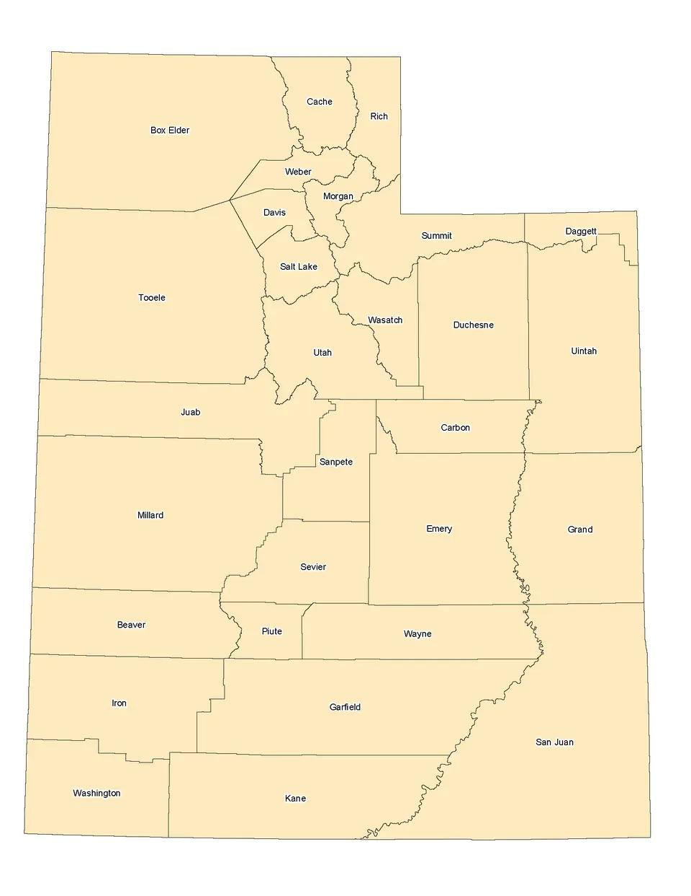

Bryson Gowans
About Me
My name is Bryson and I am from Utah, United States of America. I enjoy reading books, particularly fantasy books. I also enjoy designing 3d models and printing them on 3d printers. My favorite season is winter; I love the snow.

Utah, United States of America

Utah is the 45th state of the United States of America. Utah has a population of roughly 3.5 million people.